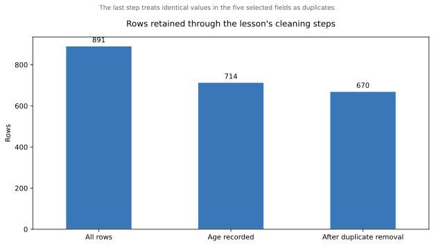
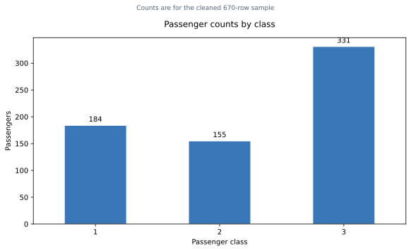
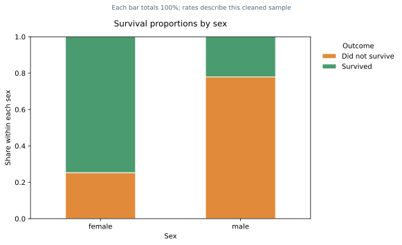
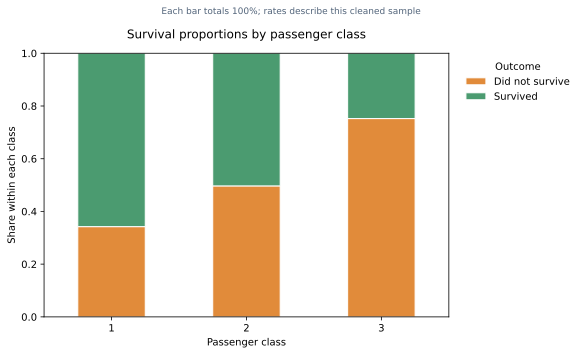
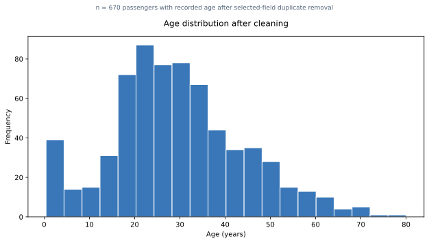
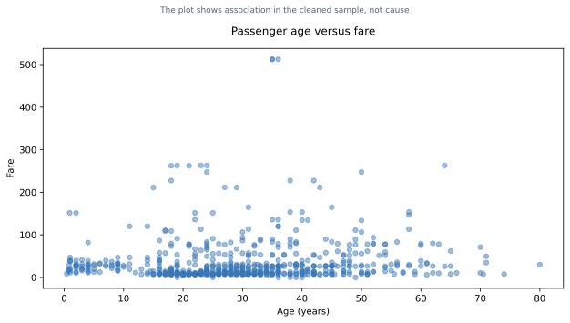
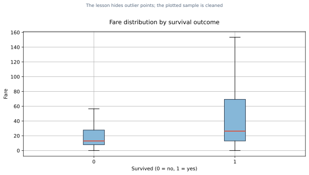
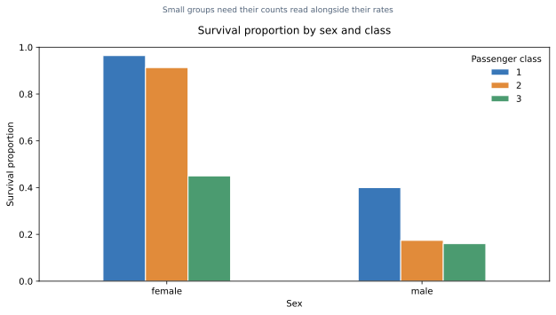
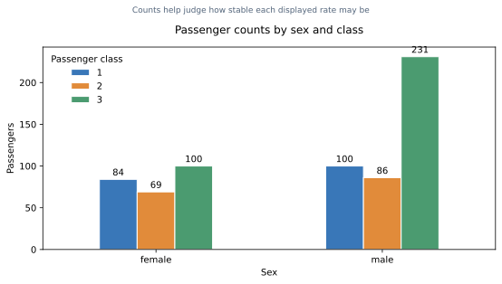
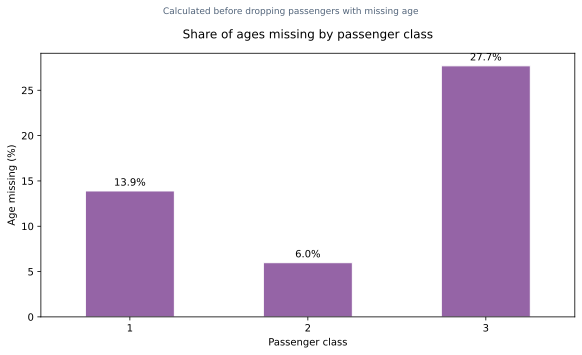

40 MCQs and 8 structured responses. Figures use the lesson's Titanic dataset and cleaning steps. All rates shown after cleaning refer to the 670-row sample unless the caption states otherwise.
Multiple-choice questions
M3L5-001
Which library loads the example Titanic dataset?
Seaborn
Matplotlib
NumPy
Bokeh
M3L5-002
What does `df.shape` report for the full Titanic table?
714 rows and 5 columns
891 rows and 15 columns
670 rows and 15 columns
891 rows and 5 columns
M3L5-003
Which pair of calls previews records and reports column types and non-null counts?
`df.describe()` and `df.mean()`
`df.value_counts()` and `df.corr()`
`df.head()` and `df.info()`
`df.plot()` and `df.shape`
M3L5-004
Which five variables are retained for the focused analysis?
sex, age, cabin, ticket, and embarked
name, age, fare, deck, and alive
pclass, sibsp, parch, deck, and class
sex, age, pclass, survived, and fare
M3L5-005
What does `df_cleaned.isnull().sum()` help identify?
The number of missing values in each selected column
The number of duplicate rows in every column
The mean of each numerical column
The number of survivors by class
M3L5-006
After selecting the five fields, which step produces the 714-row table?

Bar chart showing 891 full rows, 714 after missing-age removal, and 670 after duplicate removal.
Drop all rows with any repeated value
Drop rows with missing `age`
Keep only first-class passengers
Remove passengers who did not survive
M3L5-007
How many rows remain after removing duplicates from the 714 age-complete records?
Bar chart showing 891 full rows, 714 after missing-age removal, and 670 after duplicate removal.
891
714
670
44
M3L5-008
Two passengers match on all five selected fields. Why does this not prove they are the same person?
Pandas cannot compare rows for equality
A duplicate row proves one passenger survived twice
A matching fare means their ages must be missing
Distinct passengers can have identical values on the fields being compared
M3L5-009
Which statement best describes the 670-row analysis table?
It contains passengers with recorded age after duplicate removal on the five selected fields
It contains every passenger from the original table
It contains only people who survived
It contains all 714 age-complete rows
M3L5-010
About what percentage of the original 891 rows remains after the two row-removal steps?
Bar chart showing 891 full rows, 714 after missing-age removal, and 670 after duplicate removal.
19.9%
75.2%
24.8%
80.1%
M3L5-011
In `df_cleaned['age'].describe()`, which statistic is shown at `50%`?
The mean age
The maximum age
The median age
The number of unique ages
M3L5-012
What is the median age in the cleaned 670-row sample?
29.82 years
20 years
39 years
28.25 years
M3L5-013
Which variable is numerical in this descriptive-statistics analysis?
age
sex
pclass
survived
M3L5-014
What does `df_cleaned['sex'].value_counts()` produce?
The survival proportion within each sex
The number of retained records in each sex category
The mean age for each sex
The percentage of missing ages by sex
M3L5-015
After age and duplicate cleaning, how many third-class passengers are in the sample?

Bar chart showing 184 class 1, 155 class 2, and 331 class 3 passengers in the cleaned sample.
155
184
331
491
M3L5-016
How can the overall survival rate be calculated from a 0/1 `survived` column?
Count the number of unique `survived` values
Divide the mean age by the row count
Use `value_counts()` without selecting an outcome
Take the mean of `survived` and convert it to a percentage
M3L5-017
Which pair of variable types is appropriate for a survival crosstab?
A categorical grouping variable and the categorical/binary survival outcome
Two numerical measurements only
A date and a continuous time series
A numerical distribution and its histogram bins
M3L5-018
In `pd.crosstab(group, survived, normalize='index')`, what does each row represent?

100%-stacked bars show within-sex survival proportions; each sex bar totals 100%.
Outcome proportions across the entire dataset
Outcome proportions within one value of `group`
Counts divided by the number of columns
A mean for each numerical field
M3L5-019
In the cleaned sample, approximately what share of women survived?
100%-stacked bars show 75% survival among women and 22% among men in the cleaned sample.
22%
50%
75%
96%
M3L5-020
The cleaned-sample survival rates are about 75% for women and 22% for men. What is a careful numerical description?
100%-stacked bars show 75% survival among women and 22% among men in the cleaned sample.
The rates differ by exactly 75 percentage points
The data prove sex alone caused the outcome
The men's rate is three times the women's rate
The women's observed rate is a little over three times the men's rate
M3L5-021
Which cleaned-sample survival proportions by passenger class are correct, in class order 1, 2, 3?

100%-stacked bars show 66%, 50%, and 25% survival in classes 1, 2, and 3.
66%, 50%, 25%
25%, 50%, 66%
96%, 91%, 45%
40%, 17%, 16%
M3L5-022
A 100%-stacked bar chart is used for the survival crosstabs. What does that normalization make easy to compare?
100%-stacked bars show 66%, 50%, and 25% survival in classes 1, 2, and 3.
Absolute passenger counts in each group
Outcome proportions across groups with different sizes
The order of individual passengers
Missing ages in every original row
M3L5-023
Why use `.sort_index()` on class counts before plotting?
Bar chart displays passenger classes in natural order 1, 2, 3, with counts 184, 155, and 331.
To remove missing ages
To sort passengers by fare
To show class labels in their meaningful order 1, 2, 3
To change frequency counts into rates
M3L5-024
What does a histogram of `age` with `bins=20` show?

Histogram of age for 670 cleaned records with recorded age, using 20 bins.
Survival rates across 20 passenger classes
The relationship between age and fare
The exact age of each passenger in row order
How the recorded ages are distributed across 20 intervals
M3L5-025
What is the correct interpretation of an age-versus-fare scatter plot?

Scatter plot of age and fare for the 670-row cleaned sample; no strong age-fare pattern is apparent.
It displays paired age and fare values to inspect whether the numerical variables vary together
It compares survival composition by class
It bins ages and counts each interval
It reports the median fare for each survival group
M3L5-026
Which conclusion should a student avoid drawing from an age–fare scatter plot alone?
Scatter plot of age and fare for the 670-row cleaned sample; no strong age-fare pattern is apparent.
That each point represents paired numerical values
That age caused a passenger to pay a particular fare
That fare varies among passengers
That the plot is a visual summary of two fields
M3L5-027
Why can a few high fares make most points in an age–fare scatter plot look compressed near the bottom?
Scatter plot includes a small number of very high fares that stretch the vertical scale.
The scatter plot removes low fares
The age variable is categorical
The fare axis must span the unusually large values too
The points are normalized to 100%
M3L5-028
In the fare box plot, which outcome group has the higher median fare?

Fare box plot grouped by survived 0 or 1; the median for 1 is higher, with overlapping distributions.
Passengers recorded as not surviving
Both medians are exactly equal
The plot has no median
Passengers recorded as surviving
M3L5-029
What does the fare box plot show beyond the difference between the medians?
Fare box plot grouped by survived 0 or 1; the median for 1 is higher, with overlapping distributions.
The two fare distributions overlap
Every survivor paid more than every non-survivor
Fare is recorded only for survivors
The groups have identical ranges and quartiles
M3L5-030
What does `df_cleaned.boxplot(column='fare', by='survived', sym='')` do?
Compares fare distributions across survival groups while hiding outlier markers
Plots survival proportions as stacked bars
Calculates a fare mean for each class
M3L5-031
In the two-variable grouping, what does `groupby(['sex', 'pclass'])['survived'].mean()` summarize?

Grouped bars show survival proportion by sex and passenger class for the cleaned sample.
The number of missing ages for each sex
The average fare across every class combined
The observed survival proportion for each sex-and-class group
The 20-bin age histogram by group
M3L5-032
In the cleaned sample, which displayed sex-and-class group has the highest survival proportion?
Grouped bars show survival proportion by sex and passenger class for the cleaned sample.
Third-class men, about 16%
Second-class men, about 17%
Third-class women, about 45%
First-class women, about 96%
M3L5-033
Which sex-and-class cell has the largest count in the cleaned sample?

Grouped bars show the six sex-by-class counts; the largest is 231 men in class 3.
Men in third class, 231
Women in third class, 100
Men in first class, 100
Women in first class, 84
M3L5-034
Why include group sizes next to rates in a combined analysis?
Grouped bars show passenger counts for each sex-by-class rate group.
Group sizes convert the rate into a median
A rate from a very small cell can be unstable despite having precise-looking decimals
Rates cannot be calculated without group sizes
Small groups always have a survival rate of zero
M3L5-035
The cleaned sample's average fare is higher among survivors. What does that comparison establish by itself?
Fare distributions overlap even though the survived group's mean and median fares are higher.
That fare alone determined every outcome
That the sample represents every passenger with recorded age
A descriptive difference in this cleaned sample, not that fare caused survival
That all survivors paid more than all non-survivors
M3L5-036
Before dropping passengers with missing age, which class has the largest share of ages missing?

Before cleaning, age is missing for 13.9% in class 1, 6.0% in class 2, and 27.7% in class 3.
First class
Second class
All three classes have the same missing share
Third class
M3L5-037
Why can dropping every row with missing age change the population represented by later results?
Before cleaning, age is missing for 13.9% in class 1, 6.0% in class 2, and 27.7% in class 3.
Missing ages are concentrated differently across passenger classes, so the removed rows may not be representative
Dropping ages changes every recorded survival value
All classes lose exactly the same share of rows
Missing values are automatically replaced by the mean
M3L5-038
Which write-up is best supported after these cleaning steps?
Sex and class alone caused the outcomes for every passenger
Among passengers with recorded age retained after selected-field duplicate removal, the observed survival rates differed by sex and class
The analysis includes every one of the original 891 passengers
Removing duplicate rows proves the remaining observations are unique people
M3L5-039
Which order best describes an end-to-end exploratory analysis?
Plot first, delete missing outcomes, fit a model, then inspect columns
Remove all repeated values before deciding which fields matter, then infer causes
Load and inspect, select and clean, describe, cross-tabulate, visualize, then examine groups together
Calculate correlations, discard small groups, and report only the highest rate
M3L5-040
What is the overall survival rate in the cleaned 670-row sample?
About 25.0%
About 50.0%
About 75.2%
About 41.9%
Structured-response questions
M3L5-E01 · 5 marks
Describe the cleaning pipeline from the full table to the analysis table. Give the row counts at each stage, calculate the approximate percentage retained, and explain why the final results apply to a restricted sample.
Bar chart showing the successive 891, 714, and 670 row totals.
M3L5-E02 · 5 marks
After 44 duplicate rows are removed based on five selected fields, explain why matching values do not prove that two rows represent the same passenger. Recommend a cautious next step and describe one way this decision could affect later summaries.
M3L5-E03 · 5 marks
Use the survival-by-sex and survival-by-class charts. Report the approximate survival proportion for women, men, and each passenger class. Explain how `normalize='index'` creates those proportions, then give one careful interpretation and one limitation.
100%-stacked bars show 75% survival among women and 22% among men in the cleaned sample.100%-stacked bars show 66%, 50%, and 25% survival in classes 1, 2, and 3.
M3L5-E04 · 5 marks
A reader sees the passenger-count-by-class chart and the 100%-stacked survival-by-class chart. Explain the different question each chart answers, read one result from each, and explain why a 100%-stacked chart cannot compare the absolute class sizes.
Cleaned sample counts are 184, 155, and 331 for classes 1, 2, and 3.100%-stacked bars show 66%, 50%, and 25% survival in classes 1, 2, and 3.
M3L5-E05 · 5 marks
Interpret the survival-by-sex-and-class chart alongside the grouped count chart. Identify the highest and lowest observed rates, give their denominators, and explain why the counts belong beside the rates.
Grouped bars show survival proportion by sex and passenger class for the cleaned sample.Grouped count bars show the six sex-by-class sample sizes; the largest is 231 men in class 3.
M3L5-E06 · 5 marks
Use the age histogram, age–fare scatter plot, and fare box plot to explain what each view contributes. State one result visible in the figures and two limits on what these plots can establish.
Histogram of age for the 670 cleaned records with recorded age, using 20 bins.Scatter plot of age and fare for the 670-row cleaned sample; no strong age-fare pattern is apparent.Fare box plot grouped by survived 0 or 1; the median for 1 is higher, with overlapping distributions.
M3L5-E07 · 5 marks
Age is missing more often for third-class passengers. Use the missing-age chart to quantify the pattern and explain why dropping all missing ages could make later results less representative. Suggest one sensitivity check suitable for exploratory analysis.
Before cleaning, age is missing for 13.9% in class 1, 6.0% in class 2, and 27.7% in class 3.
M3L5-E08 · 5 marks
Plan an exploratory analysis for a new passenger-like CSV. Write a compact pandas workflow to load and inspect it, select fields, quantify and handle missing age, summarize numerical and categorical variables, compute survival proportions by two categorical fields, and create one appropriate plot. Include a sentence explaining how you would report the cost of cleaning.